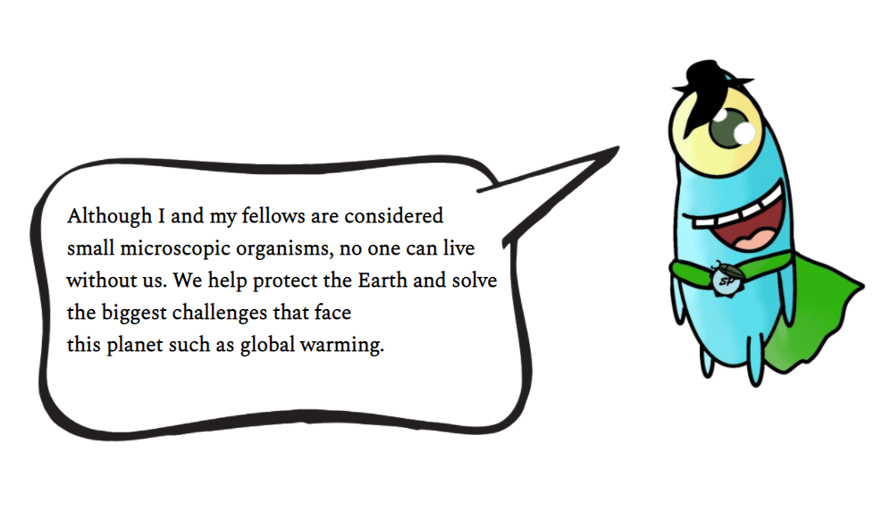
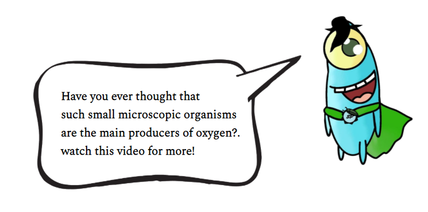
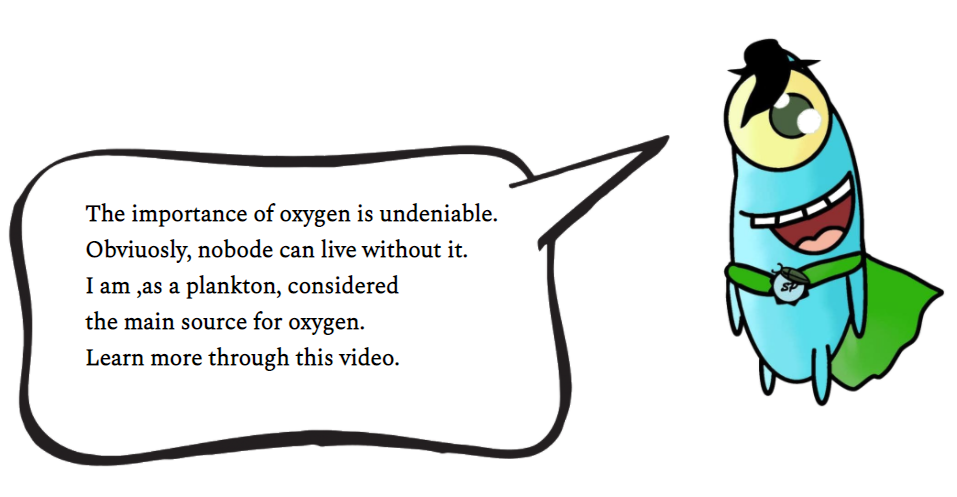

Abstract
Despite facing many challenges, superpowers still exist, and especially if this power is the main reason for having living creatures, it is oxygen, the important gas for respiration for all the creatures, in addition to its role in keeping the earth's temperature in balance. It would be a disaster - not just a challenge- if the percentage of oxygen in the atmosphere decreased, creatures will die, and global warming will burn our planet. All of us know that planting is a very good solution because plants produce about 28% of the earth's oxygen. If you see the importance of planting, you are true but wrong, that is because PHYTOPLANKTONS produce about 70% of earth's oxygen, which is such a great percentage for producing oxygen. Although, we
still have a lack of oxygen because of global warming, fuels, and harmful industries.
What if we can increase the efficiency of the phytoplankton to grow and produce larger amounts of oxygen? First, we should agree that phytoplankton has conditions and factors for growth, which are CO2, sunlight, and warm water, in addition to the phosphorus _that doesn't exist in many aquatic areas, i.e.: the Mediterranean Sea_. What if we could add phosphorus to the warm water that includes phytoplankton and provided this structure with CO2 and sunlight? For sure, the phytoplankton will have better growth and better production of oxygen. Fortunately, there is 70% of the earth's area filled with water, so the probability of creating a phosphorus warm sunny area for phytoplanktons will increase where phosphorus is considered as an extra superpower for producing extra oxygen.

Introduction
Do you believe in the power of rainforests? If yes, you certainly think that rainforests and any other areas with plants have the superpower that produces oxygen. In fact, plants produce only about 28% of earth’s oxygen and the main source of oxygen is the oceans (let’s call it super oxyocean for now). In more detail, there is a type of marine algae called phytoplankton, they survive by photosynthesis, so they stay all the time in the top layer of water in order to get the biggest amount of sunlight, in addition to the healthy environment that is filled by suitable nutrients for growth (let’s call them super planktons).

What are Phytoplanktons?
Phytoplanktons are microscopic plants that are found in watery environments near the surface of both salty and fresh water. Some phytoplanktons are bacteria, some are protists, and most are single-celled plants. Like plants on land, phytoplanktons have chlorophyll to capture sunlight and convert it to chemical energy by photosynthesis, and they take in carbon dioxide and produce oxygen. Phytoplankton growth depends on the availability of carbon dioxide, sunlight, and nutrients. These nutrients such as nitrate, phosphate, silicate, and calcium at various levels depending on the species. Some phytoplankton can adapt and grow in areas where nitrate concentrations are low. They also require iron which has a low concentration and that limits phytoplankton growth in large areas of the ocean. Other factors can affect phytoplankton growth, including water temperature and salinity, water depth, and wind. When conditions are suitable for phytoplankton growth, they can grow explosively; this phenomenon is known as a bloom. Blooms in the ocean may cover hundreds of square kilometers and are easily visible in satellite images. A single bloom may last several weeks, but the life span of any individual phytoplankton is rarely more than a few days.
Importance of oxygen
Oxygen is important for all living organisms even humans, but have you thought before about the producer of oxygen, yes, they are forests that have a lot of green plants. In fact, about 20% of the atmospheric oxygen is produced in the forests. therefore, where is the rest of oxygen produced? It's produced in the ocean by the super phytoplankton which takes carbon dioxide and produces oxygen by photosynthesis in the presence of sunlight and nutrients.

What is the danger
According to statistics, oxygen is about 21% of the earth’s atmosphere, which is a very accurate percentage. By looking to the past, where no pollution, no extra-carbon dioxide, no black clouds, and no fires, the percentage of oxygen in the earth's atmosphere was greater than 21%, which concludes that pollution and any harmful activity will be the reason for losing oxygen in the future. By checking the importance of oxygen existence, it will be a real disaster to lose oxygen because of some reasons:
- Oxygen plays a critical role in respiration, which indicates that having smaller amounts of oxygen will cause many physical issues for all living creatures.
- Almost all the energy production processes require the existence of oxygen, which means that losing oxygen will be an obstacle in any energy-conversion activity.
- Oxygen gives our cells the ability to break down food in order to get the energy we need to survive, in case of low oxygen percentages, cells will be disabled to do their function, which is the main reason for death.
- Since oxygen is responsible for keeping the flame of fire on, so without oxygen, no fires will exist, even in the combustion process in our car vehicles.
- Reducing oxygen levels thins the atmosphere, which will able more sunlight to enter the planet, which means higher temperatures with more water evaporation as water vapor is a greenhouse gas.
Possible solutions
- Since phytoplankton depends on light to complete the photosynthesis process, reducing the volume of clouds by producing less carbon dioxide will make light absorption easier for phytoplankton.
- Since the aquatic medium plays a significant role in providing a healthy environment for phytoplankton to grow, providing the most important components of a healthy environment for growth (i.e.: phosphorus and nitrogen) might help in phytoplankton growth. In detail, nitrogen is almost found in the atmosphere as it is 78% of it, while phosphorus quantities aren’t available, so the balance might exist when adding some phosphorus resources, like rocks and sediment.
- Since human wastes contain about 3 million metric tons of phosphorus every year, using this huge amount of phosphorus will achieve the balance between the nutrients' existence and the oxygen production, in detail, building net prototypes to collect the solid human wastes from the sewage pipes.
The extra superpower
In order to define an extra superpower that phytoplanktons already have, comes the importance of phosphorus and nitrates, as they are the required nutrients for phytoplankton growth, which indicates better production for oxygen. Since photosynthesis is depending on CO2, sunlight, and other nutrients, so this process can’t exist in the absence of any element, and especially phosphorus and nitrates as they are the main components for phytoplankton growth. On the other hand, the consumed amounts of the previous nutrients would turn the drinking water into a toxic material if they weren’t used in another option, which is super talented phytoplankton have _consuming large amounts of toxic materials_.